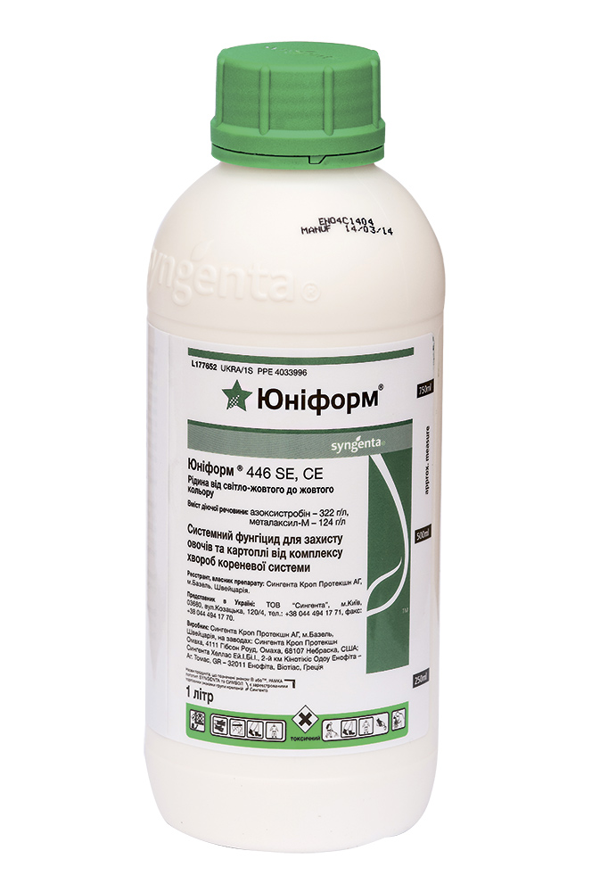

Універсальна вакцина для здорового врожаю
паспорт препарату
Юніформ® 446 SE, CE
322 г/л азоксистробіну, 124 г/л металаксилу–М
Стробілурини, феніламіди
Суспензійна емульсія
Класифікація ВООЗ: II
1 л
Фото упаковки

головні переваги препарату
- Просте вирішення проблем із кореневими хворобами
- Пригнічення широкого спектра патогенів
- Захищаючи кореневу систему, захищає всю рослину
- Має системно-лікувальну дію
- Підвищує стресостійкість рослини в посушливих умовах
Застосування препарату
ТОМАТИ ВІДКРИТОГО ҐРУНТУ
Спектр дії
Фаза внесення
Норма витрати, л/га
Кратність обробок / Термін очікування
ТОМАТИ ЗАКРИТОГО ҐРУНТУ
Спектр дії
Фаза внесення
Норма витрати, л/га
Кратність обробок / Термін очікування
ОГІРКИ ВІДКРИТОГО ҐРУНТУ
Спектр дії
Фаза внесення
Норма витрати, л/га
Кратність обробок / Термін очікування
ОГІРКИ ЗАКРИТОГО ҐРУНТУ
Спектр дії
Фаза внесення
Норма витрати, л/га
Кратність обробок / Термін очікування
КАВУН
Спектр дії
Фаза внесення
Норма витрати, л/га
Кратність обробок / Термін очікування
ЦИБУЛЯ
Спектр дії
Фаза внесення
Норма витрати, л/га
Кратність обробок / Термін очікування
КАРТОПЛЯ
Спектр дії
Фаза внесення
Норма витрати, л/га
Кратність обробок / Термін очікування
Сумісність
Сумісний із більшістю інсектицидів, регуляторів росту рослин. У кожному конкретному випадку слід проводити тести на сумісність.
Особливості застосування
Вчасна подача робочого розчину в поливному циклі забезпечує правильне розміщення фунгіциду в кореневій зоні. На легких ґрунтах його треба вносити протягом третьої чверті, на важких — протягом другої третини поливного циклу.
Застосування на томатах починається від фази другого справжнього листка.
Переваги використання на картоплі
- Відмінна системна дія дозволяє повністю захищати не тільки кореневу систему, а й прикореневу частину рослини та захищає від посадки до цвітіння
- Найширший спектр пригнічуваних збудників хвороб, знезаражує ґрунт, корені та стебла
- Найефективніші діючі речовини для внесення в ґрунт при посадці
- Готове антирезистентне рішення завдяки двом діючим речовинам із різних класів
- Якісний урожай, вільний від хвороб
- Зберігає максимальну кількість рослин на гектарі
рекомендована норма витрати робочого розчину
80–200 л/га — на картоплі.
ВАЖЛИВО!
В Україні компанія «Сингента» для внесення в ґрунт при садінні картоплі пропонує лише один продукт із вмістом азоксистробіну — Юніформ®.
Європейська назва технології «Амістар-технологія» обумовлена тим, що в Європі назву AMISTAR має фунгіцид із вмістом азоксистробіну (250 г/л). Тобто, в Україні це Квадріс®.
Фунгіциди Амістар® Екстра та Амістар® Тріо, що зареєстровані в Україні, крім азоксистробіну вміщують також діючі речовини з хімічної групи триазолів — пропіконазол та ципроконазол. Амістар® Екстра та Амістар® Тріо на картоплі застосовувати не можна по-перше тому, що вони не мають офіційної реєстрації, а по-друге — діючі речовини з хімічної групи триазолів на початкових фазах розвитку паростків завдають їм значного фітотоксичного впливу. В результаті пригнічується їх ріст, затримується не тільки поява сходів, а й ріст рослин у початковий період.
ґрунтове внесення фунгіцидів
РЕЧОВИНИ, МОЖЛИВІ ДЛЯ ҐРУНТОВОГО ЗАСТОСУВАННЯ
Розчинність у воді, мг/л
Поглинання ґрунтом, мл/г
Період напіврозкладу (ДТ50), дні
АЗОКСИСТРОБІН (ЮНІФОРМ®)
Розчинність у воді, мг/л
Поглинання ґрунтом, мл/г
Період напіврозкладу (ДТ50), дні
ФЛУДИОКСОНІЛ (МАКСИМ®)
Розчинність у воді, мг/л
Поглинання ґрунтом, мл/г
Період напіврозкладу (ДТ50), дні
ПЕНЦИКУРОН
Розчинність у воді, мг/л
Поглинання ґрунтом, мл/г
Період напіврозкладу (ДТ50), дні
рекомендації з ґрунтового внесення Юніформу
- Обприскування дна борозни при посадці бульб за допомогою двох форсунок, установлених на картоплеcаджалку.
- Заробка препарату по всьому ґрунтовому профілю гребеня.
- Перший розпилювач обприскує ґрунт на дні борозни перед падінням бульби.
- Другий розпилювач обприскує стінки борозни після падіння бульби при її закритті.
- Факел розпилу форсунок слід відрегулювати так, щоб ширина захвату оброблюваної поверхні дна борозни становила 15–20 см.